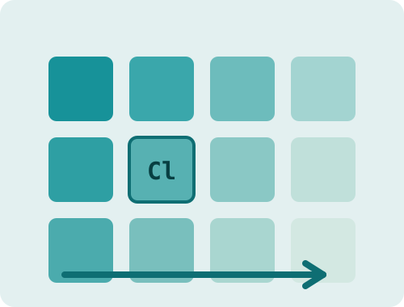

Periodic Trends
The periodic table is a map, not a list to memorize. Every position on it predicts how an atom behaves. Pick a view below and watch it move across the elements, then click any element for its numbers.

radius shrinks →
How this works: each element carries its published data. The buttons swap which value drives the color scale, and the label above the table names the direction the trend runs. Each numeric view has its own accent color, and a darker tile always means a larger value. The last two views are not scales at all: they sort the elements into groups and show a legend instead of an arrow. Tiles with a dashed edge have no accepted published value for that trend, which is common among the superheavy elements. The selected element is marked with an outline so it keeps its scale color.
Why the trends exist
Every periodic trend comes from two competing effects: the nuclear charge pulling electrons inward, and the inner electron shells screening that pull. Across a period the charge wins, so atoms get smaller and hold their electrons more tightly. Down a group the shells win, so atoms get larger and give electrons up more easily. Once you see those two effects, the trends stop being separate facts and become consequences of one rule.
That is also why the corners of the table are the drama zones. Fluorine, small and barely screened, pulls electrons harder than any other element. Cesium and francium, huge and heavily screened, barely hold their outer electron at all. Chemistry mostly happens because the two corners want opposite things.